가스기사 (2017-05-07 기출문제)
1과목: 가스유체역학
1. 정적비열이 1000J/㎏·K이고, 정압비열이 1200J/㎏·K인 이상기체가 압력 200kPa 에서 등엔트로피 과정으로 압력이 400kPa로 바뀐다면, 바뀐 후의 밀도는 원래 밀도의 몇 배가 되는가?
- 1.41
- 1.64
- 1.78
- 2
(정답률: 53%)

2. 지름이 3m 원형 기름탱크의 지붕이 평평하고 수평이다. 대기압이 1atm일 때 대가가 지붕에 미치는 힘은 몇 ㎏f인가?
- 7.3×102
- 7.3×103
- 7.3×104
- 7.3×105
(정답률: 69%)
3. 절대압력이 4×104㎏f/m2이고, 온도가 15℃인 공기의 밀도는 약몇 ㎏/m3인가? (단, 공기의 기체상수는 29.27㎏f·m/㎏·K이다.)
- 2.75
- 3.75
- 4.75
- 5.75
(정답률: 68%)
4. Stokes 법칙이 적용되는 범위에서 항력계수(drag coefficient) CD를 옳게 나타낸 것은?
- CD＝16/Re
- CD＝24/Re
- CD＝64/Re
- CD＝0.44/Re
(정답률: 63%)
5. 다음 보기 중 Newton의 점성법칙에서 전단응력과 관련 있는 항으로만 되어 있는 것은?
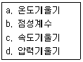
- a, b
- a, d
- b, c
- c, d
(정답률: 77%)
6. 밀도가 1000㎏/m3인 액체가 수평으로 놓인 축소관을 마찰 없이 흐르고 있다. 단면 1에서의 면적과 유속은 각각 40cm2, 2m/s이고, 단면 2의 면적은 10cm2일 때 두 지점의 압력차이(P1-P2)는 몇 kPa인가?
- 10
- 20
- 30
- 40
(정답률: 57%)
7. 유체역학에서 다음과 같은 베르누이 방정식이 적용되는 조건이 아닌 것은?
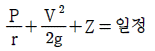
- 적용되는 임의의 두 점은 같은 유선상에 있다.
- 정상상태의 흐름이다.
- 마찰이 없는 흐름이다.
- 유체흐름 중 내부에너지 손실이 있는 흐름이다.
(정답률: 80%)
8. 펌프에서 전체 양정 10m, 유량 15m3/min, 회전수 700rpm을 기준으로 한 비속도는?
- 271
- 482
- 858
- 1⑤0
(정답률: 53%)
9. 어떤 유체의 운동문제에 8개의 변수가 관계되고 있다. 이 8개의 변수에 포함되는 기본차원이 질량 M, 길이 L, 시간 T일때 π정리로서 차원해석을 한다면 몇 개의 독립적인 무차원량 π를 얻을 수 있는가?
- 3개
- 5개
- 8개
- 11개
(정답률: 82%)
10. 비중 0.9인 액체가 지름 10㎝인 원관 속을 매분 50㎏의 질량유량으로 흐를 때, 평균속도는 얼마인가?
- 0.118m/s
- 0.145m/s
- 7.08m/s
- 8.70m/s
(정답률: 50%)
11. 기체 수송 장치 중 일반적으로 압력이 가장 높은 것은?
- 팬
- 송풍기
- 압축기
- 진공펌프
(정답률: 88%)
12. 송풍기의 공기유량이 3m3/s일 때, 흡입 쪽의 전압이 110kPa, 출구 쪽의 정압이 115kPa이고 속도가 30m/s이다. 송풍기에 공급하여야 하는 축동력은 얼마인가? (단, 공기의 밀도는 1.2㎏/m3이고, 송풍기의 전효율은 0.8이다.)
- 10.45kW
- 13.99kW
- 16.62kW
- 20.78kW
(정답률: 41%)
13. 중량 10000㎏f의 비행기가 270km/h의 속도로 수평 비행할 때 동력은? (단, 양력(L)과 항력(D)의 비 L/D＝5이다.)
- 1400 PS
- 2000 PS
- 2600 PS
- 3000 PS
(정답률: 65%)
14. 지름 20㎝ 이 원관이 한 변의 길이가 20㎝인 정사각형 단면을 가지는 덕트와 연결되어 있다. 원관에서 물의 평균속도가 2m/s일 때, 덕트에서 물의 평균속도는 얼마인가?
- 0.78 m/s
- 1 m/s
- 1.57 m/s
- 2 m/s
(정답률: 65%)
15. 원심펌프 중 회전차 바깥둘레에 안내깃이 없는 펌프는?
- 벌류트 펌프
- 터빈 펌프
- 베인 펌프
- 사류 펌프
(정답률: 66%)
16. 정상유동에 대한 설명 중 잘못된 것은?
- 주어진 한 점에서의 압력은 항상 일정하다.
- 주어진 한 점에서의 속도는 항상 일정하다.
- 유체입자의 가속도는 항상 0이다.
- 유선, 유적선 및 유맥선은 모두 같다.
(정답률: 56%)
17. 공기 중의 소리속도 C는 C2＝(∂P/∂P)s로 주어진다. 이때 소리의 속도와 온도의 관계는? (단, T는 주위 공기의 절대온도이다.)
- C ∝ √T
- C ∝ T2
- C ∝ T3
- C ∝ 1/T
(정답률: 81%)
18. 그림과 같이 비중이 0.85인 기름과 물이 층을 이루며 뚜껑이 열린 용기에 채워져 있다. 물의 가장 낮은 밑바닥에서 받는 게이지 압력은 얼마인가? (단, 물의 밀도는 1000㎏/m3이다.)
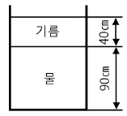
- 3.33kPa
- 7.45kPa
- 10.8kPa
- 12.2kPa
(정답률: 54%)
19. 온도가 일정할 때 압력이 10㎏f/cm2 abs인 이상기체의 압축률은 몇 cm2k/gf인가?
- 0.1
- 0.5
- 1
- 5
(정답률: 56%)
20. 충격파(shock wave)에 대한 설명 중 옳지 않은 것은?
- 열역학 제2법칙에 따라 엔트로피가 감소한다.
- 초음속 노즐에서는 충격파가 생겨날 수 있다.
- 충격파 생성 시, 초음속에서 아음속으로 급변한다.
- 열역학적으로 비가역적인 현상이다.
(정답률: 66%)
2과목: 연소공학
21. 가스의 폭발등급은 안전간격에 따라 분류한다. 다음 가스 중 안전간격이 넓은 것부터 옳게 나열된 것은?
- 수소＞에틸렌＞프로판
- 에틸렌＞수소＞프로판
- 수소＞프로판＞에틸렌
- 프로판＞에틸렌＞수소
(정답률: 70%)
22. 프로판(C3H8)의 연소반응식은 다음과 같다. 프로판(C3H8)의 화학양론계수는?
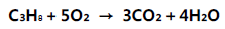
- 1
- 1/5
- 6/7
- -1
(정답률: 72%)
23. 프로판가스 10㎏ 을 완전 연소시키는데 필요한 공기의 양은 약 얼마인가?
- 12.1m3
- 121m3
- 44.8m3
- 448m3
(정답률: 65%)
24. 발생로 가스의 가스분석 결과 CO2 3.2%, CO 26.2%, CH4 4%, H2 12.8%, N2 53.8%이었다. 또한 가스 1Nm3 중에 수분이 50g이 포함되어 있다면 이 발생로 가스 1Nm3을 완전 연소시키는데 필요한 공기량은 약 몇 Nm3인가?
- 1.023
- 1.228
- 1.324
- 1.423
(정답률: 45%)
25. 파라핀계 탄화수소의 탄소수 증가에 따른 일반적인 성질변화로 옳지 않은 것은?
- 인화점이 높아진다.
- 착화점이 높아진다.
- 연소범위가 좁아진다.
- 발열량(kcal/m3)이 커진다.
(정답률: 52%)
26. 가스압이 이상 저하한다든지 노즐과 콕크 등이 막혀 가스량이 극히 적게 될 경우 발생하는 현상은?
- 불완전 연소
- 리프팅
- 역화
- 황염
(정답률: 75%)
27. 다음과 같은 반응에서 A의 농도는 그대로 하고 B의 농도를 처음의 2배로 해주면 반응속도는 처음의 몇 배가 되겠는가?
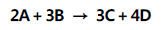
- 2배
- 4배
- 8배
- 16배
(정답률: 70%)
28. 오토 사이클에서 압축비(Ɛ)가 8일 때 열효율은 약 몇%인가? (단, 비열비[k]는 1.4이다.)
- 56.5
- 58.2
- 60.5
- 62.2
(정답률: 58%)
29. 다음 중 비엔트로피의 단위는?
- kJ/㎏·m
- ㎏/kJ·K
- kJ/kPa
- kJ/㎏·K
(정답률: 65%)
30. 15℃의 공기 2L를 10㎏/cm2로 단열압축시킨다면 1단 압축의 경우 압축 후의 배출가스의 온도는 약 몇 ℃인가? (단, 공기의 단열지수는 1.4이다.)
- 154
- 183
- 215
- 246
(정답률: 47%)
31. 가스버너의 연소중 화염이 꺼지는 현상과 거리가 먼 것은?
- 공기량의 변동이 크다.
- 점화에너지가 부족하다.
- 연료 공급라인이 불안정하다.
- 공기연료비가 정상범위를 벗어났다.
(정답률: 78%)
32. 가스폭발의 방지대책으로 가장 거리가 먼 것은?
- 내부폭발을 유발하는 연소성 혼합물을 피한다.
- 반응성 화합물에 대해 폭굉으로의 전이를 고려한다.
- 안전밸브나 파열판을 설계에 반영한다.
- 용기의 내압을 아주 약하게 설계한다.
(정답률: 90%)
33. 포화증기를 일정 체적하에서 압력을 상승시키면 어떻게 되는가?
- 포화액이 된다.
- 압축액이 된다.
- 과열증기가 된다.
- 습증기가 된다.
(정답률: 79%)
34. 층류예혼합화염과 비교한 난류예혼합화염의 특징에 대한 설명으로 옳은 것은?
- 화염의 두께가 얇다.
- 화염의 밝기가 어둡다.
- 연소 속도가 현저하게 늦다.
- 화염의 배후에 다량의 미연소분이 존재한다.
(정답률: 80%)
35. 무연탄이나 코크스와 같이 탄소를 함유한 물질을 가열하여 수증기를 통과시켜 얻는 H2와 CO2를 주성분으로 하는 기체 연료는?
- 발생로가스
- 수성가스
- 도시가스
- 합성가스
(정답률: 70%)
36. 방폭전기기기의 구조별 표시방법 중 틀린 것은?
- 내압방폭구조(d)
- 안전증방폭구조(s)
- 유입방폭구조(o)
- 본질안정방폭구조(ia 또는 ib)
(정답률: 81%)
37. 연소범위는 다음 중 무엇에 의해 주로 결정되는가?
- 온도, 압력
- 온도, 부피
- 부피, 비중
- 압력, 비중
(정답률: 84%)
38. 수소를 함유한 연료가 연소할 경우 발열량의 관계식 중 올바른 것은?
- 총발열량＝진발열량
- 총발열량＝진발열량 / 생성된 물의 증발잠열
- 총발열량＝진발열량＋생성된 물의 증발잠열
- 총발열량＝진발열량 - 생성된 물의 증발잠열
(정답률: 80%)
39. 다음 확산화염의 여러 가지 형태 중 대향분류(對向噴流) 확산 화염에 해당하는 것은?
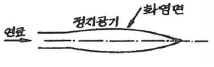
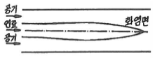
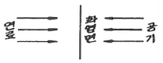
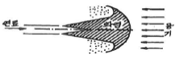
(정답률: 85%)
40. 다음 중 내연기관의 화염으로 가장 적당한 것은?
- 층류, 정상 확산 화염이다.
- 층류, 비정상 확산 화염이다.
- 난류, 정상 예혼합 화염이다.
- 난류, 비정상 예혼합 화염이다.
(정답률: 65%)
3과목: 가스설비
41. 프로판의 탄소와 수소의 중량비(C/H)는 얼마인가?
- 0.375
- 2.67
- 4.50
- 6.40
(정답률: 70%)
42. LP가스사용시설에 강제기화기를 사용할 때의 장점이 아닌것은?
- 기화량의 증감이 쉽다.
- 가스 조성이 일정하다.
- 한냉 시 가스공급이 순조롭다.
- 비교적 소량 소비 시에 적당하다.
(정답률: 73%)
43. 다음 각 가스의 폭발에 대한 설명으로 틀린 것은?
- 아세틸렌은 조연성 가스와 공존하지 않아도 폭발할 수 있다.
- 일산화탄소는 가연성이므로 공기와 공존하면 폭발할 수 있다.
- 가연성 고체 가루가 공기 중에서 산소분자와 접촉하면 폭발할 수 있다.
- 이산화황은 산소가 없어도 자기분해 폭발을 일으킬 수 있다.
(정답률: 69%)
44. 냉동장치에서 냉매가 갖추어야할 성질로서 가장 거리가 먼 것은?
- 증발열이 적은 것
- 응고점이 낮은 것
- 가스의 비체적이 적은 것
- 단위냉동량당 소요동력이 적은 것
(정답률: 56%)
45. 외경과 내경의 비가 1.2가 이상인 산소가스 배관 두께를 구하는 식은
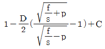
이다. D는 무엇을 의미하는가?- 배관의 내경
- 배관의 외경
- 배관의 상용압력
- 내경에서 부식여유에 상당하는 부분을 뺀 부분의 수치
(정답률: 72%)
46. 탄화수소에서 아세틸렌가스를 제조할 경우의 반응에 대한 설명으로 옳은 것은?
- 통상 메탄 또는 나프타를 열분해함으로써 얻을 수 있다.
- 탄화수소 분해반응 온도는 보통 500~1000℃이고 고온일수록 아세틸렌이 적게 생성된다.
- 반응압력은 저압일수록 아세틸렌이 적게 생성된다.
- 중축합반응을 촉진시켜 아세틸렌 수율을 높인다.
(정답률: 59%)
47. 고압가스시설에 설치한 전기방식의 시설의 유지관리 방법으로 옳은 것은?
- 관대지 전위 등은 2년에 1회 이상 점검하였다.
- 외부전원법에 의한 전기방식시설은 외부전원점관대지전위, 정류기의 출력, 전압, 전류, 배선의 접속은 3개월에 1회 이상 점검하였다.
- 배류법에 의한 전기방식시설은 배류점 관대지전위, 배류기 출력, 전압, 전류, 배선 등은 6개월에 1회 이상 점검하였다.
- 절연부속품, 역전류방지장치, 결선 등은 1년에 1회 이상 점검하였다.
(정답률: 55%)
48. 압력조정기의 구성이 아닌 것은?
- 캡
- 로드
- 슬릿
- 다이어프램
(정답률: 59%)
49. LP가스 사용 시의 특징에 대한 설명으로 틀린 것은?
- 연소기는 LP가스에 맞는 구조이어야 한다.
- 발열량이 커서 단시간에 온도상승이 가능하다.
- 배관이 거의 필요 없어 입지적 제약을 받지 않는다.
- 예비용기는 필요 없지만 특별한 가압장치가 필요하다.
(정답률: 71%)
50. 고압가스 제조 장치의 재료에 대한 설명으로 틀린 것은?
- 상온 건조 상태의 염소가스에 대하여는 보통강을 사용해도 된다.
- 암모니아, 아세틸렌의 배관 재료에는 구리를 사용해도 된다.
- 저온에서는 고탄소강보다 저탄소강이 사용된다.
- 암모니아 합성탑 태부의 재료에는 18-8스테인리스강을 사용한다.
(정답률: 86%)
51. LP 가스 탱크로리의 하역종료 후 처리할 작업순서로 가장 옳은 것은?
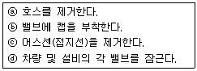
- ⓓ → ⓐ→ ⓑ → ⓒ
- ⓓ → ⓐ→ ⓒ → ⓑ
- ⓐ→ ⓑ → ⓒ → ⓓ
- ⓒ → ⓐ→ ⓑ → ⓓ
(정답률: 76%)
52. 전양정 20m, 유량 1.8m3/min, 펌프의 효율이 70%인 경우 펌프의 축동력(L)은 약 몇 마력(PS)인가?
- 11.4
- 13.4
- 15.5
- 17.5
(정답률: 63%)
53. 다음 중 산소 가스의 용도가 아닌 것은?
- 의료용
- 가스용접 및 절단
- 고압가스 장치의 퍼지용
- 폭약제조 및 로켓 추진용
(정답률: 75%)
54. 정압기 특성 중 정상상태에서 유량과 2차 압력과의 관계를 나타내는 특성을 무엇이라 하는가?
- 정특성
- 동특성
- 유량특성
- 작동최소차압
(정답률: 83%)
55. 산소제조 장치에서 수분제거용 건조세가 아닌 것은?
- SiO2
- Al2O3
- NaOH
- Na2CO3
(정답률: 53%)
56. 원유, 등유, 나프타 등 분자량이 큰 탄화수소 원료를 고온 (800~900℃)으로 분해하여 10000kcal/m3 정도의 고열량 가스를 제조하는 방법은?
- 열분해공정
- 접촉분해공정
- 부분연소공정
- 대체천연가스공정
(정답률: 87%)
57. 다음 [그림]은 가정용 LP가스사용시설이다. R1에 사용되는 조정기의 종류는?
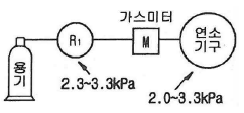
- 1단 감압식 저압조정기
- 1단 감압식 중압조정기
- 1단 감압식 고압 조정기
- 2단 감압식 저압조정기
(정답률: 83%)
58. LPG배관에 직경 0.5㎜의 구멍이 뚫려 LP가스가 5시간 유출되었다. LP가스의 비중이 1.55 라고 하고 압력은 280㎜H2O 공급되었다고 가정하면 LPG의 유출량은 약 몇 L인가?
- 131
- 151
- 171
- 191
(정답률: 58%)
59. 왕복식 압축기의 연속적인 용량제어 방법으로 가장 거리가 먼 것은?
- 바이패스 밸브에 의한 조정
- 회전수를 변경하는 방법
- 흡입밸브를 폐쇄하는 방법
- 베인 컨트롤에 의한 방법
(정답률: 64%)
60. 금속재료에 대한 일반적인 설명으로 옳지 않은 것은?
- 황동은 구리와 아연의 합금이다.
- 뜨임의 목적은 담금질 후 경화된 재료에 인성을 증대시키는 등 기계적 성질의 개선을 꾀하는 것이다.
- 철에 크롬과 니켈을 첨가한 것은 스테인리스강이다.
- 청동은 강도는 크나 주조성과 내식성은 좋지 않다.
(정답률: 75%)
4과목: 가스안전관리
61. 다음 연소기의 분류 중 전가스소비량의 범위가 업무용 대형 연소기에 속하는 것은?
- 전가스소비량이 6000kcal/h인 그릴
- 전가스소비량이 7000kcal/h인 밥솥
- 전가스소비량이 5000kcal/h인 오븐
- 전가스소비량이 14400kcal/h인 가스렌지
(정답률: 68%)
62. 다음 중 독성가스가 아닌 것은?
- 아크릴로니트릴
- 아크릴알데히드
- 아황산가스
- 아세트알데히드
(정답률: 73%)
63. 독성가스인 염소 500㎏을 운반할 때 보호구를 차량의 승무원 수에 상당한 수량을 휴대하여야 한다. 다음 중 휴대하지 않아도 되는 보호구는?
- 방독마스크
- 공기호흡기
- 보호의
- 보호장갑
(정답률: 88%)
64. 온수기나 보일러를 겨울철에 장시간 사용하지 않거나 실온에 설치하였을 때 물이 얼어 연소기구가 파손될 우려가 있으므로 이를 방지하기 위하여 설치하는 것은?
- 휴즈 메탈(fuse metal) 장치
- 드레인(drain)장치
- 후레임 로드(flame rod)장치
- 물 거버너(water governor)
(정답률: 80%)
65. 암모니아 가스의 장치에 주로 사용될 수 있는 재료는?
- 탄소강
- 동
- 동합금
- 알루미늄합금
(정답률: 63%)
66. 고압가스안전관리법에 의한 산업통상자원부령이 정하는 고압가스 관련설비에 해당되지 않는 것은?
- 정압기
- 안전밸브
- 기화장치
- 독성가스배관용 밸브
(정답률: 60%)
67. 액화석유가스 자동차에 고정된 탱크충전시설에서 자동차에 고정된 탱크는 저장탱크의 외면으로부터 얼마 이상 떨어져서 정지하여야 하는가?
- 1m
- 2m
- 3m
- 5m
(정답률: 72%)
68. 염소의 제독제로 적당하지 않은 것은?
- 물
- 소석회
- 가성소다 수용액
- 탄산소다 수용액
(정답률: 77%)
69. 다음 가스 중 압력을 가하거나 온도를 낮추면 가장 쉽게 액화하는 것은?
- 산소
- 헬륨
- 질소
- 프로판
(정답률: 74%)
70. 용기에 의한 액화석유가스 저장소의 자연환기설비에서 1개소 환기구의 면적은 몇 cm2 이하로 하여야 하는가?
- 2000cm2
- 2200cm2
- 2400cm2
- 2600cm2
(정답률: 77%)
71. 최소발화에너지에 영향을 주는 요인으로 가장 거리가 먼 것은?
- 온도
- 압력
- 열량
- 농도
(정답률: 62%)
72. 가스 폭발의 위험도를 옳게 나타낸 식은?
- 위험도＝폭발상한값(%) / 폭발하한값(%)
- 위험도＝(폭발상한값(%) - 폭발하한값(%)) / 폭발하한값(%)
- 위험도＝폭발하한값(%) / 폭발상한값(%)
- 위험도＝1 - (폭발하한값(%) / 폭발상한값(%))
(정답률: 82%)
73. -162℃의 LNG(메탄 : 90%, 에탄 : 10%, 액비중 : 0.46)를 1atm, 30℃로 기화시켰을 때 부피의 배수(倍數)로 맞는 것은?
- 475배
- 557배
- 657배
- 757배
(정답률: 46%)
74. 산소를 취급할 때 주의사항으로 틀린 것은?
- 산소가스 용기는 가연성가스나 독성가스용기와 분리 저장한다.
- 각종 기기의 기밀시험에 사용할 수 없다.
- 산소용기 기구류에는 기름, 그리스를 사용하지 않는다.
- 공기액화 분리기 안에 설치된 액화산소토 안의 액화산소는 1개월에 1회 이상 분석한다
(정답률: 57%)
75. 정전기 제거설비를 정상상태로 유지하기 위한 검사항목이 아닌 것은?
- 지상에서 접지저항치
- 지상에서의 접속부의 접속상태
- 지상에서의 접지접속선의 절연여부
- 지상에서의 절선 그밖에 손상부분의 유무
(정답률: 63%)
76. 고압가스 운반 시에 준수하여야 할 사항으로 옳지 않은 것은?
- 밸브가 돌출한 충전용기는 캡을 씌운다.
- 운반 중 충전용기의 온도는 40도 이하로 유지한다.
- 오토바이에 20Kg LPG 용기 3개 까지는 적재 할 수 있다.
- 염소와 수소는 동일 차량에 적자운반을 금한다
(정답률: 86%)
77. 액화석유가스 충전소의 용기 보관장소에 충전용기를 보관하는 때의 기준으로 옳지 않은 것은?
- 용기 보관장소의 주위 8m 이내에는 석유, 휘발유를 보관하여서는 아니 된다.
- 충전용기는 항상 40℃ 이하를 유지하여야 한다.
- 용기가 너무 냉각 되지 않도록 겨울철에는 직사광선을 받도록 조치하여야 한다.
- 충전용기와 잔가스용기는 각각 구분하여 놓아야 한다.
(정답률: 82%)
78. 독성가스 저장탱크에 부착된 배관에는 그 외면으로 부터 일정거리 이상 떨어진 곳에서 조작할 수 있는 긴급차단 장치를 설치하여야 한다. 그러나 액상의 독성가스를 이입하기 위해 설치된 배관에는 어느 것으로 갈음할 수 있는가?
- 역화방지장치
- 독성가스배관용밸브
- 역류방지밸브
- 인터록기구
(정답률: 57%)
79. 암모니아를 사용하는 A공장에서 저장능력 25톤의 저장탱크를 지상에 설치하고자 할 때 저장설비 외면으로부터 사업소외의 주택까지 안전거리는 얼마 이상을 유지하여야 하는가? (단, A공장의 지역은 전용공업지역 아님)
- 20m
- 18m
- 16m
- 14m
(정답률: 53%)
80. 독성가스를 용기에 충전하여 운반하게 할 때 운반책임자의 동승기준으로 적절하지 않은 것은?
- 압축가스 허용농도가 100만분의 200 초과 100만분의 5000이하 : 가스량 1000m3 이상
- 압축가스 허용농도가 100반분의 200 이하 : 가스량 10m3 이상
- 액화가스 허용농도가 100만분의 200초과 100만분의 5000이하 : 가스량 1000㎏ 이상
- 액화가스 허용농도가 100만분의 200이하 : 가스량 100㎏ 이상
(정답률: 52%)
5과목: 가스계측기기
81. 유도단위는 어느 단위에서 유도되는가?
- 절대단위
- 중력단위
- 특수단위
- 기본단위
(정답률: 76%)
82. Stokes의 법칙을 이용한 점도계는?
- Ostwald 점도계
- Falling ball type 점도계
- Saybolt 점도계
- Rotation type점도계
(정답률: 68%)
83. 오르자트 분석기에 의한 배기가스 각 성분 계산법 중 CO의 성분 % 계산법은?
- 100-(CO2%＋N2O%＋O2%)
- (KOH 30% 용액흡수량 / 시료채취량) × 100
- (알칼리성피로갈롤용액흡수량 / 시료채취량) × 100
- (암모니아성염화제일구리용액흡수량 / 시료채취량) × 100
(정답률: 65%)
84. 에탄올, 헵탄, 벤젠, 에틸아세테이트로 된 4성분 혼합물을 TCD를 이용하여 정량분석하려고 한다. 다음 데이터를 이용하여 각 성분(에탄올 : 헵탄 : 벤젠 : 에틸아세테이트)의 중량분율(wt%)을 구하면?
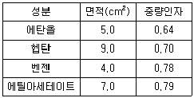
- 20 : 36 : 16 : 28
- 22.5 : 37.1 : 14.8 : 25.6
- 22.0 : 24.1 : 26.8 : 27.1
- 17.6 : 34.7 : 17.2 : 30.5
(정답률: 56%)
85. 배관의 모든 조건이 같을 때 지름을 2배로 하면 체적유량은 약 몇 배가 되는가?
- 2배
- 4배
- 6배
- 8배
(정답률: 79%)
86. 물체의 탄성 변위량을 이용한 압력계가 아닌 것은?
- 부르동관 압력계
- 벨로우즈 압력계
- 다이어프램 압력계
- 링밸런스식 압력계
(정답률: 64%)
87. 가스비터의 설치장소로 적당하지 않은 것은?
- 수직, 수평으로 설치한다.
- 환기가 양호한 곳에 설치한다.
- 검침, 교체가 용이한 곳에 설치한다.
- 높이가 200㎝ 이상인 위치에 설치한다.
(정답률: 87%)
88. 실내공기의 온도는 15℃이고, 이 공기의 노점은 5℃로 측정되었다. 이 공기의 상대습도는 약 몇 %인가? (단, 5℃, 10℃ 및 15℃의 포화수증기압은 각각 6.54㎜Hg, 9.21㎜Hg, 및 12.79㎜Hg이다.)
- 46.6
- 51.1
- 71.0
- 72.0
(정답률: 62%)
89. 유독가스인 시안화수소의 누출탐지에 사용되는 시험지는?
- 연당지
- 초산벤지민지
- 하리슨씨 시험지
- 염화 제1구리 착염지
(정답률: 68%)
90. 접촉식 온도계의 측정 방법이 아닌 것은?
- 열팽창 이용법
- 전기저항 변화법
- 물질상태 변화법
- 열복사의에너지 및 강도 측정
(정답률: 61%)
91. 가스크로마토그래피 분석기에서 FID(Flame Ionization Detector)검출기의 특성에 대한 설명으로 옳은 것은?
- 시료를 파괴하지 않는다.
- 대상 감도는 탄소수에 반비례한다.
- 미량의 탄화수소를 검출할 수 있다.
- 연소성 기체에 대하여 감응하지 않는다.
(정답률: 73%)
92. 목표값이 미리 정해진 변화를 하거나 제어순서 등을 지정하는 제어로서 금속이나 유리 등의 열처리에 응용하면 좋은 제어방식은?
- 프로그램제어
- 비율제어
- 캐스케이드제어
- 타력제어
(정답률: 71%)
93. 고속회전이 가능하므로 소형으로 대용량 계량이 가능하고 주로 대수용가의 가스측정에 적당한 계기는?
- 루트미터
- 막식가스미터
- 습식가스미터
- 오리피스미터
(정답률: 74%)
94. 광전관식 노점계에 대한 설명으로 틀린 것은?
- 기구가 복잡하다.
- 냉각장치가 필요 없다.
- 저습도의 측정이 가능하다.
- 상온 또는 저온에서 상점의 정도가 우수하다.
(정답률: 60%)
95. 기준가스미터 교정주기는 얼마인가?
- 1년
- 2년
- 3년
- 5년
(정답률: 60%)
96. 제어의 최종신호 값이 이 신호의 원인이 되었던 전달 요소로 되돌려지는 제어방식은?
- open-loop 제어계
- closed-loop 제어계
- forward 제어계
- feedforward 제어계
(정답률: 67%)
97. 로터리 피스톤형 유량계에서 중량유량을 구하는 식은? (단, C : 유량계수, A : 유출구의 단면적, W : 유체 중의 피스톤 중량, a : 피스톤의 단면적이다.)
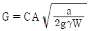
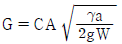
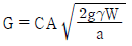
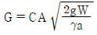
(정답률: 55%)
98. 연소 분석법에 대한 설명으로 틀린 것은?
- 폭발법은 대체로 가스 조성이 일정할 때 사용하는 것이 안전하다.
- 완만연소법은 질소 산화물 생성을 방지할 수 있다.
- 분별연소법에서 사용되는 촉매는 파라듐, 백금 등이 있다.
- 완만 연소법은 지름 0.5㎜ 정도의 백금선을 사용한다.
(정답률: 48%)
99. 액주식 압력계에 봉입되는 액체로서 가장 부적당한 것은?
- 윤활유
- 수은
- 물
- 석유
(정답률: 58%)
100. 속도분포식 U＝4y2/3일 때 경계면에서 0.3m지점의 속도구배 (S-1)는?
- 2.76
- 3.38
- 3.98
- 4.56
(정답률: 45%)
$$dh=Tds+vdp$$
압력이 일정한 경우, $dp=0$ 이므로,
$$dh=Tds$$
따라서, 등엔트로피 과정에서는 $dh=Tds$ 이다. 이를 적분하면,
$$h_2-h_1=T(s_2-s_1)$$
여기서 $h$는 엔탈피, $s$는 엔트로피를 나타낸다. 등엔트로피 과정에서는 $s_2=s_1$ 이므로,
$$h_2-h_1=0$$
즉, 등엔트로피 과정에서는 엔탈피가 변하지 않는다. 따라서, 압력이 200kPa 일 때와 400kPa 일 때의 밀도 비율은 다음과 같다.
$$frac{rho_2}{rho_1}=frac{p_1}{p_2} times frac{T_2}{T_1}=frac{200}{400} times frac{T_2}{T_1}=frac{1}{2} times frac{T_2}{T_1}$$
이제, 이상기체의 상태방정식을 이용하여 $T_2/T_1$을 구해보자. 이상기체의 상태방정식은 다음과 같다.
$$pv=RT$$
등압과정에서는 $p$가 일정하므로,
$$frac{v_2}{v_1}=frac{T_2}{T_1}$$
따라서,
$$frac{rho_2}{rho_1}=frac{1}{2} times frac{v_1}{v_2}=frac{1}{2} times frac{1}{v_2/v_1}=frac{1}{2} times frac{1}{p_1/p_2}=frac{1}{2} times frac{1}{2}=0.5$$
즉, 바뀐 후의 밀도는 원래 밀도의 0.5배가 된다. 따라서, 원래 밀도의 몇 배가 되는지를 구하면,
$$frac{1}{0.5}=2$$
즉, 바뀐 후의 밀도는 원래 밀도의 2배가 된다. 따라서, 정답은 "2"가 된다.